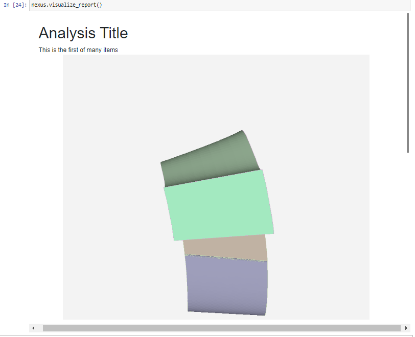
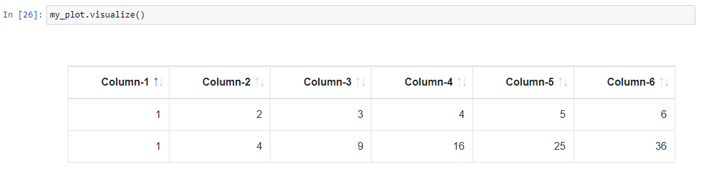
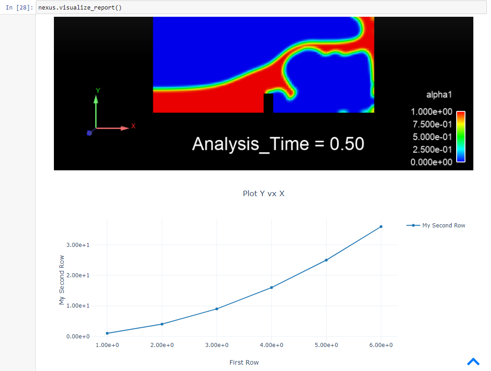

Examples#
PyNexus examples#
This section contains examples of usage of the ansys-pynexus module. More examples
will follow as the API is expanded.
Connecting to a running service and adding new items#
Let us assume you have an Ansys Nexus service running on a remote machine. Create a connection to it:
>>> import ansys.pynexus as n
>>> nexus = n.PyNexus()
>>> nexus.connect(url = "htpp://remotemachine:8010", username = 'admin', password = 'mypsw')
True
Now, create a text, and image, and a scene item:
>>> my_text = nexus.create_item()
>>> my_text.item_text = "<h1>Analysis Title</h1>This is the first of many items"
>>> my_image = nexus.create_item()
>>> my_image.item_image = r'''D:\tmp\tmp_img.png'''
>>> my_scene = nexus.create_item()
>>> my_scene.item_scene = r'''D:\tmp\tmp_scene.avz'''
This will automatically push these items into the Nexus database. Now, visualize them:
>>> nexus.visualize_report()
This will result in the following embedded widget:

Note that if you click on the item corresponding to the scene, a 3D viewer will become available, allowing for direct interaction with the scene object.
Now let’s add a plot. Use the following code:
>>> my_plot = nexus.create_item()
>>> import numpy as np
>>> my_plot.item_table = np.array([[1, 2, 3,4,5,6],[1,4, 9,16,25,36]], dtype="|S20")
>>> my_plot.visualize()
Note how this will visualize the information you input in table format:

Let us now change the attributes on this object to make it into a plot:
>>> my_plot.rowlbls = ['First Row', 'My Second Row']
>>> my_plot.plot = 'line'
>>> my_plot.xaxis = 0
>>> my_plot.title = 'Plot Y vx X'
This will set the rendering attributes. We can not choose to visualize all the items together, including the new plot, by simply repeating
>>> nexus.visualize_report()
which will result in:
